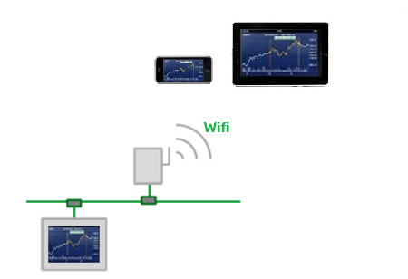

|
|
|
|
|
|
|
|
Vijeo Design'Air application enables you to connect to a target machine by using a tablet or smartphone. Depending on the target machine's remote management settings, using a tablet or smartphone, you can view, control, and interact with the target machine over a wireless network. The target machine acts as the server, while the tablet or smartphone acts as the client.
When connected to a target machine, Vijeo Design'Air client displays:
A synchronized screen-by-screen view of the HMI application that runs on the server
The events that are taking place on the HMI screen
Actions that are being performed by a local operator.

When you remotely access a target machine using the Vijeo Design'Air client, you will have the same access rights and credentials as the local operator that is already logged into the target machine. This feature enables you to monitor or work together with another operator on a target machine. You must not allow for both operators to set the same variable at the same time as this will have unpredictable results. You can limit the remote access to the target machine by changing the security settings of Vijeo Design'Air server. For more information, see Sections Vijeo Design'Air Server Security and Vijeo Design'Air System Variables.

When designing a project for Vijeo Design'Air, carefully consider the potential of accidental touches on objects that run operations. Apply security levels on such objects to prevent unintended or unauthorized access. You must also inform and warn the operators of hazards related to operating machinery remotely. For more information on how to secure the target machines and objects, see Section 4.8, Setting up Security Protection for Targets and Projects, Section 4.8.2.1, Protecting Panels and Switches from Unauthorized Users, and Section 9.6, Using Interlock to Prevent Accidental Touch Input.
To set up the remote access, you must configure both the server and the client:
Vijeo Design'Air server — To set up the server, first enable the remote management settings in Vijeo Designer, then proceed with validating and downloading the project to the target machine. The Vijeo Design'Air server is downloaded to the target machine as part of the Vijeo Designer Runtime files and automatically runs when the target machine starts up. For more information, see Section 23.1.2.1, Setting up Vijeo Design'Air Server.
Vijeo Design'Air client — To set up the client, first download the Vijeo Design'Air application from the application marketplace (for example, Google Play or App Store) to your tablet or smartphone. Then run the client application to identify, select, and connect to the target machine (the server). For more information, see Section 23.1.2.2, Setting Up Vijeo Design'Air Client - Android, and Section 23.1.2.3, Setting Up Vijeo Design'Air Client - iOS.

Tablets and smartphones must use Android 2.3.3 or later, or iOS 6.0 or later.
At any given time, only one Vijeo Design'Air client can connect to the server.
Not all target machines support Vijeo Design'Air. For a complete list of supported target machines, see Appendix 5.2, Features Supported by Hardware Platforms.